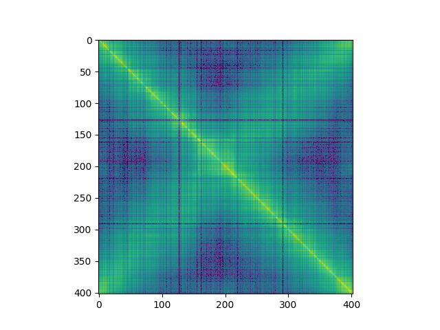

Note
Click here to download the full example code
Loading and plotting C. crescentus data.
Out:
/home/travis/build/TrEE-TIMC/circhic/examples/datasets/plot_ccrescentus.py:16: MatplotlibDeprecationWarning: default base may change from np.e to 10. To suppress this warning specify the base keyword argument.
ax.imshow(counts, norm=colors.SymLogNorm(1), interpolation="none")
<matplotlib.image.AxesImage object at 0x7f2be9804438>
from circhic import datasets
import matplotlib.pyplot as plt
from matplotlib import colors
counts, lengths = datasets.load_ccrescentus()
fig, ax = plt.subplots()
ax.imshow(counts, norm=colors.SymLogNorm(1), interpolation="none")
Total running time of the script: ( 0 minutes 0.163 seconds)